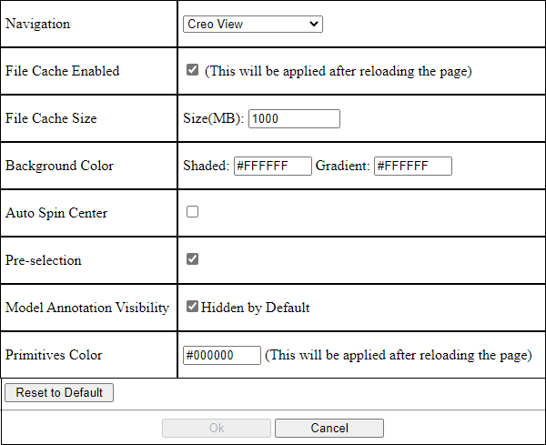

Managing Locator Definitions in Locators Tab¶
Within the part structure browser for a configurable product, a Locators tab is available that allows you to view and manage locators for a configurable module and map locators to module variant coordinate systems exposed from the CAD design.
Refer the video for more details. To view the video in a larger window, click on the video title. This opens the video in YouTube in a new tab.
Creating a Locator for a Configurable Module¶
Prerequisite:¶
To create a locator for a configurable module, you must have the modify access to the configurable module.
The configurable module must not be checked-out by other users.
To create a locator for a configurable module, follow these steps:
Click in the Locators table. A New Locator dialog opens.
Add a name for the locator.
Click OK. The locator is displayed as a new column in the table.
Editing the Visualization Preference from the Locator Tab¶
You can view and edit the visualization preference in the Locators tab by pressing Shift + P key. This opens the viewer preference window. Make changes in this window as needed and click OK. When the 3D view of the configurable part is rendering, a progress indicator is displayed in the visualization panel.
{kind=link}
Note
The Pre-selection functionality, available in the Creo View WebGL Preferences window and part selection, is not supported in the visualization panel on the Locators tab.